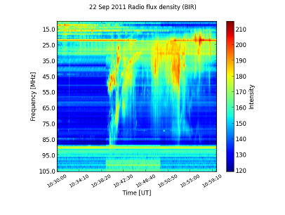
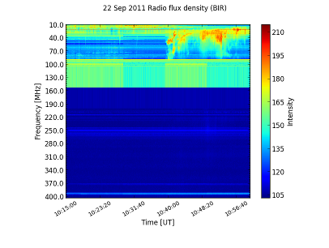

Spectra
Warning
This module is under development! Use at your own risk.
Spectrograms
SunPy currently supports reading dynamic spectra from e-Callisto instruments. The main class that is used for this is :py:class:`CallistoSpectrogram <sunpy.spectra.sources.callisto.CallistoSpectrogram>`. SunPy also comes with an example image that shows a radio burst observed at Rosse Observatory (aka. BIR; Birr Castle, Co. Offaly, Ireland) that can be found in sunpy.CALLISTO_IMAGE:
from matplotlib import pyplot as plt import sunpy from sunpy.spectra.sources.callisto import CallistoSpectrogram image = CallistoSpectrogram.read(sunpy.CALLISTO_IMAGE)
You can now view the image by using the :py:meth:`show() <sunpy.spectra.spectrogram.Spectrogram.show>` method.
image.show()

We now notice that there seems to be something interesting that has been cut off at the corner of the image, so we use the extend method to request more data from the server. It optionally takes the amount of minutes we want to request from the server (negative values mean we want to add data that was registered before our existing local data), if none are given it defaults to 15 minutes (the size of one e-Callisto file).:
more = image.extend() more.show()
We will, for the purposes of this demonstration, continue working with the original image, though.
You can then perform automatic constant background subtraction by using the :py:meth:`subtract_bg() <sunpy.spectra.spectrogram.Spectrogram.subtract_bg>` method. The resulting image will be clipped at 0 using the min_ parameter of show in order to avoid negative values.:
nobg = image.subtract_bg() nobg.show(min_=0)

If you want to see the background determined by the automatic subtraction, you can use the :py:meth:`auto_const_bg() <sunpy.spectra.spectrogram.Spectrogram.auto_const_bg>` method and visualize the resulting data using :py:func:`pyplot.plot`.:
plt.figure()
bg = image.auto_const_bg()
plt.plot(image.freq_axis, bg)
xlabel("Frequency [MHz]")
ylabel("Intensity")
plt.show() # This might not be necessary if you are using pylab.

Now let us say we want to isolate the interesting bit (which starts around 10:38) from the boring background; there is a method called :py:meth:`in_interval() <sunpy.spectra.spectrogram.LinearTimeSpectrogram.in_interval>` that allows us to take the part of an image that is within a specified interval. Leaving out the second argument it defaults to the end time of the file.:
interesting = nobg.in_interval("10:38")
interesting.show(min_=0)

To get rid of the noise, we could also clip low intensities.:
interesting.show(min_=20)

If we want more context, we can also join together different images into a large one in time (note that this does more than just concatenating the array and the axes -- it also considers possible overlap or gaps).:
c1 = CallistoSpectrogram.read("BIR_20110922_101500_01.fit")
c2 = CallistoSpectrogram.read("BIR_20110922_103000_01.fit")
d = CallistoSpectrogram.join_many([c1, c2])
d.show()

We could also get the from_range method to get data between those two points directly from the archive and joined together (though that will fetch all frequencies of BIR).:
d = CallistoSpectrogram.from_range("BIR", "2011-09-22T10:15:00", "2011-09-22T10:45:00")
d.show()

The :py:meth:`plot() <sunpy.spectra.spectrogram.Spectrogram.plot>` and :py:meth:`show() <sunpy.spectra.spectrogram.Spectrogram.show>` methods return a special kind of figure that offers convenience features needed for analyzing spectrograms, a :py:class:`SpectroFigure <sunpy.spectra.spectrogram.SpectroFigure>`. By using its :py:meth:`time_freq() <sunpy.spectra.spectrogram.SpectroFigure.time_freq>`, we can select points on the figure and frequency-time information of them will be returned as a :py:class:`TimeFreq <sunpy.spectra.spectrogram.TimeFreq>`. Time is stored as offsets in seconds from TimeFreq.start.:
fig = image.show() time_freq = fig.time_freq() # Select points. time_freq.time #array([ 0. , 54.5 , 104. , 163.25]) time_freq.freq #array([ 68.76923077, 59.29888786, 48.50092678, 36.46385542])
We can then quickly visualize this using the :py:meth:`show() <sunpy.spectra.spectrogram.TimeFreq.show>` method:
time_freq.show(marker='o', linestyle='--')